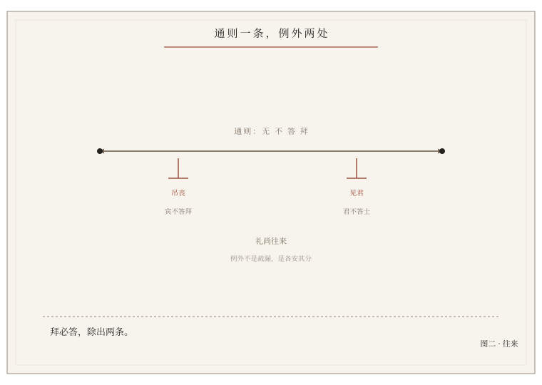

曲礼下 · 二·二十九 · 第 152 课
除了吊丧、除见己君，凡受拜无不答拜。注「礼尚往来。丧，宾不答拜，不自宾客也。国君见士，不答其拜，士贱」。
说什么事：凡非吊丧，非见国君，无不答拜者。
落在哪一层：礼。论例外的两种，与通则的一条。
为何编在此位：上节说谁先拜，此节说拜必答。先与答，是同一件事的两头。
【经】凡非弔喪，非見國君，無不答拜者。
【注】禮尚往來。喪，賓不答拜，不自賓客也。國君見士，不答其拜，士賤。
【疏】此明礼尚往来也。己虽贤德，而必皆相答拜也。凡拜而不答拜者，唯有吊丧与士见己君此二条耳。吊所以宾不答拜者，己本来为助执于丧事，非行宾主之礼，故主人虽拜己，己不答也。故《士丧礼》有宾则拜之、宾不答拜是也。君不答士者，谓士见己君，君尊不答也。案《聘礼》士介四人，君皆答拜者，以其他国之士故也。
凡 统摄之辞。下两「非」为除出之条。
吊丧 往吊他人之丧。
见国君 疏「士见己君」，注「国君见士」。己之君。
无不答拜 双重否定，即「皆答拜」。
不自宾客 注语。吊者不把自己当作宾客，故不受答拜之礼。
士贱 注语。君尊士卑，故君不答。
凡不是吊丧、不是朝见本国国君，没有受了拜而不答拜的。
礼以往来为常：受了拜，就要答拜。此节先立通则，再点两条例外——吊丧者不受答，见君者君不答。例外不是疏漏，是各安其分。
第一层 尚往来 注四字「礼尚往来」，是全部礼的骨架。拜而不答，则礼成了单向的施与，不成其为礼。
第二层 吊丧为例外之一 疏「己本来为助执于丧事，非行宾主之礼」。吊者来帮忙办事，不是来做客。既不作客，就不受宾主之答。
第三层 见君为例外之二 君尊，士贱，君不答士之拜。此非轻士，是守尊卑之定分。然《聘礼》他国之士，君皆答拜——分在同国与异国，不在士之贵贱。这一层最须细看。
第四层 贤德不能改此例 疏首句「己虽贤德，而必皆相答拜」，是话头：通则不因贤而免；例外亦不因贤而改。
与今日何干 收礼要回礼，是通则。有两种情形可以不回：一是来帮忙办事的，不当他是客；二是位分本不相对的。辨清这两处，往来才不至于变成交易。
| 左 | 右 |
|---|---|
| 凡非吊丧 | 吊者助事，不作宾 |
| 非见国君 | 士见己君，君尊不答 |
| 无不答拜 | 双重否定，皆答拜 |
| 礼尚往来 | 注四字，全礼之骨架 |
| 不自宾客 | 不把自己当客，故不受答 |
| 他国之士君答拜 | 分在同国异国，不在士贱 |
画一条横向的往复双箭头，左右两端各一枚小圆，两圆之间等距；箭头中段上方标一枚实心小方（示意通则）。箭头下方并列两处断开：左断处上方画一只向下俯的手，手边无回箭；右断处上方画一枚方印形，印下无回箭。断开处以短竖线标示。不写文字。赭色只用在两处断开处。
